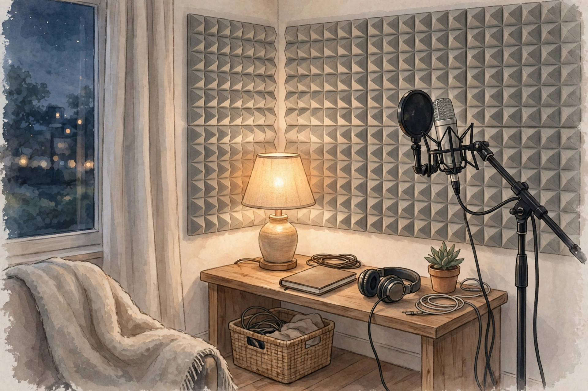

この記事の要点
- 自分の話し声が、隣の部屋や隣の家に聞こえていないか気になることはありませんか？
- 吸音は、部屋の中の音の反響を減らす働きです。
- 吸音材は、音のエネルギーを、素材の中の細かい隙間で熱などに変えて、減らす仕組みです。
💡 まず知っておきたいこと：吸音と遮音は、別の働きです
吸音は、部屋の中の音の反響を減らす働きです。声が壁に当たって跳ね返るのを、やわらかい素材が吸収して、部屋の中の響きを小さくします。遮音は、音が壁や床を通って、隣の部屋に行くのを減らす働きです。吸音材を壁に貼ったからといって、声の漏れがそのままなくなるわけではありません。反響が減ると、部屋の中では声が聞き取りやすくなり、結果として声の出し方を控えめにできる場合もありますが、壁を通る音そのものを止める効果は、限定的だと考えてください。吸音と遮音を、同じものとして考えるのは、誤解のもとです。
🧽 吸音材の仕組み
吸音材は、音のエネルギーを、素材の中の細かい隙間で熱などに変えて、減らす仕組みです。やわらかくて、空気を多く含む素材ほど、吸音しやすい傾向があります。たとえば、厚みのあるカーテンや、布製のソファ、カーペット、本棚に並んだ本なども、部屋の響きをやわらげる要素になります。専用の吸音パネルや、吸音スポンジと呼ばれるものも、同じ考え方です。ただし、薄い素材では、低い声の成分までは吸収しにくい傾向があります。話し声の聞き取りやすさに関わる中音域は、比較的吸音しやすい一方で、低い声や、ドンという音は、吸音だけでは扱いにくい場合があります。素材の表示だけを見て、すべての音に効くと考えるのは、避けてください。
🏠 話し声の漏れを考えるときの、部屋の使い方
話し声の漏れを考えるときは、まず、声の出し方と、部屋の使い方から見直してみてください。壁に向かって直接話すより、壁から少し離れる、ドアや窓の隙間を意識する、夜は声の大きさを控える、という工夫は、無理なく続けやすい方法です。部屋の中の反響が大きいと、自分の声が大きく聞こえて、つい声を張ってしまう場合もあります。カーテンを閉める、布製品を増やす、といった反響を減らす工夫は、声の出し方を落ち着かせる助けになる場合があります。マイクを使う場合は、マイクの向きや距離、感度の設定も、声の大きさに関わります。マイクが遠いと、つい大きな声で話してしまう場合があります。ヘッドセットや、口元に近いマイクを使うと、声を控えめにできる場合があります。
🧽 吸音材を選ぶときの考え方
吸音材を選ぶときは、まず、何を減らしたいのかを、はっきりさせてください。部屋の反響を減らしたいのか、隣への漏れを減らしたいのかで、考えるべき対策は違います。反響を減らしたい場合は、吸音材の厚みや、貼る場所、貼る面積が、目安になります。貼る場所は、声が出る場所の近くや、反響が気になる壁が、考えやすい場所です。ただし、吸音材をたくさん貼れば、必ず快適になるわけではありません。部屋がこもった感じになる場合もあります。賃貸の場合は、壁を傷つけない取り付け方法や、原状回復ができるかどうかも、大切な条件です。このページでは、内容に合う商品の例を、広告であることを明記したうえで、下に紹介しています。
参考：商品の例（広告）
このページの内容に合う商品の例です。購入する場合は、商品ページの仕様や価格をご確認ください。
吸音パネル「フェルメノン」（ピアリビング）を楽天市場で見る（広告）
価格：3,630円〜（2026年10月30日確認時点の表示価格。サイズ・枚数によって変わります。一部の色は売り切れの場合があります。）
⚠️ 注意
このページの内容は、法律の判断や、音響工事の専門的なアドバイスではありません。吸音材で、話し声の漏れを完全になくすことはできません。目安として、無理のない範囲で試してみてください。壁や床の大きな工事が必要な場合は、管理会社や専門家への相談をご検討ください。